SONA COLLEGE OF TECHNOLOGY, SALEM (AUTONOMOUS)
AFFILIATED TO ANNA UNIVERSITY: CHENNAI 600 025
Certified that this project report titled "MACHINE LEARNING BASED BEAM FAILURE PREDICTION AND RECOVERY IN 5G MILLIMETER WAVE COMMUNICATION SYSTEMS" is the bonafide work of "[NAME OF MEMBER-1] ([ROLL NO]) and [NAME OF MEMBER-2] ([ROLL NO])", who carried out the project work under my supervision.
|
SIGNATURE Dr. R. S. SABEENIAN, Professor, Head of the Department, Department of ECE, Sona College of Technology, Salem – 636005. |
SIGNATURE [NAME OF THE GUIDE], Professor (Insert designation), Supervisor, Department of ECE, Sona College of Technology, Salem – 636005. |
Submitted for the Project Viva-Voce examination held on __________.
| Internal Examiner | External Examiner |
At this pleasing moment of having successfully completed our main project, we wish to convey our sincere thanks and gratitude to our parents and the College management our chairman Shri. C. VALLIAPPA, and our vice chairmen Shri. CHOCKO VALLIAPPA and Shri. THYAGU VALLIAPPA who provided all the facilities to us.
We would like to express our sincere thanks and gratitude to our principal, Dr. S. R. R. SENTHILKUMAR for motivating us to do our project and for offering adequate duration for completing our project.
We are also immensely grateful and thankful to our Head of the Department Dr. R. S. SABEENIAN, M.E., Ph.D., Professor, Department of ECE, for his constructive suggestion and encouragement during our project.
With deep sense of gratitude, we extend our earnest and sincere thanks to our project guide <INSERT NAME OF GUIDE>, <Designation>, Department of ECE, for his kind guidance during this project.
We also extend our sincere thanks to our Course handling faculty and Project coordinator <INSERT NAME COORDINATOR>, <Designation>, Department of ECE, for their unwavering support and conduct of project.
We express our gratitude to the Teaching and Technical staff of the Department of ECE, Sona College of Technology for their support and cooperation. We take this opportunity to extend our deep appreciation to our parents, our family, and friends for all that they meant to us during the crucial times of the completion of the project.
The fifth generation millimeter wave communication systems operate at extremely high carrier frequencies around 28 GHz, providing multi-gigabit data rates but suffering severe signal attenuation due to path loss, blockage by physical obstacles, and rapid beam misalignment caused by user mobility. Current beam failure recovery mechanisms operate reactively, detecting signal loss only after communication disruption has already occurred and introducing significant outage durations that degrade quality of service. This project presents a machine learning based proactive beam failure prediction and recovery system implemented as a complete software simulation in MATLAB. A mathematically realistic 5G millimeter wave environment was simulated incorporating a Friis path loss channel model, a two-state Markov chain blockage model, a parabolic directional beam gain model for five configurable beam directions at 28 GHz, and a linear user equipment mobility model operating at 10 meters per second. The simulation automatically generated a labeled machine learning dataset of 1000 samples with six signal quality features used to train a Decision Tree classifier to predict beam failure events within a configurable prediction horizon of 2 seconds.
The trained model achieved an accuracy of 84.35 percent, a precision of 100 percent indicating zero false alarms, a recall of 37.84 percent, and an F1 score of 54.90 percent on the held out test set. A proactive recovery algorithm was implemented using the trained model and evaluated against a conventional reactive recovery algorithm on identical simulation scenarios. The proposed machine learning based proactive system triggered 97 percent fewer beam switches compared to the conventional system, eliminating the signal thrashing behavior characteristic of reactive approaches. A professional interactive dashboard was developed in MATLAB displaying real time key performance indicators, signal to noise ratio charts, blockage event timelines, beam switching event visualizations, and comparative performance metrics. The results confirm that machine learning can predict impending beam failures in 5G millimeter wave systems and enable proactive recovery that significantly reduces signaling overhead and eliminates unnecessary beam switching.
| CHAPTER NO | TITLE | PAGE NO |
|---|---|---|
| ABSTRACT | v | |
| LIST OF TABLES | vii | |
| LIST OF FIGURES | viii | |
| LIST OF ABBREVIATIONS | ix | |
| 1. | INTRODUCTION | 1 |
| 1.1 Overview of 5G Communication | 1 | |
| 1.2 Millimeter Wave Communication | 2 | |
| 1.3 Beamforming in 5G | 3 | |
| 1.4 Problem Statement | 4 | |
| 1.5 Objectives of the Proposed Work | 4 | |
| 1.6 Applications of the System | 5 | |
| 2. | LITERATURE SURVEY | 6 |
| 3. | SYSTEM ARCHITECTURE AND METHODOLOGY | 10 |
| 3.1 Existing System | 10 | |
| 3.2 Drawbacks of Existing System | 11 | |
| 3.3 Proposed System Block Diagram | 11 | |
| 3.4 Channel Model | 13 | |
| 3.5 Mobility Model | 14 | |
| 3.6 Blockage Model | 15 | |
| 3.7 Beamforming Model | 15 | |
| 4. | MACHINE LEARNING IMPLEMENTATION | 17 |
| 4.1 Dataset Generation | 17 | |
| 4.2 Data Preprocessing and Split | 18 | |
| 4.3 Machine Learning Flowchart | 18 | |
| 4.4 Decision Tree Classifier | 19 | |
| 4.5 Proactive vs Conventional Recovery | 21 | |
| 4.6 Advantage of Proposed System | 22 | |
| 5. | RESULTS AND DISCUSSION | 23 |
| 5.1 Software Architecture and Simulation Setup | 23 | |
| 5.2 UE Trajectory and Beam Coverage | 24 | |
| 5.3 SNR and Signal Analysis | 25 | |
| 5.4 Beam Switching Events | 26 | |
| 5.5 ML Model Evaluation | 27 | |
| 5.6 Feature Importance | 28 | |
| 5.7 SNR vs Failure Probability | 29 | |
| 5.8 Comparative Performance Analysis | 30 | |
| 5.9 Interactive Dashboard Results | 31 | |
| 6. | CONCLUSION | 33 |
| 6.1 Conclusion | 33 | |
| 6.2 Future Scope of the Work | 34 | |
| REFERENCES | 35 |
| TABLE NO | TITLE | PAGE NO |
|---|---|---|
| 1 | Simulation Configuration Parameters | 12 |
| 2 | ML Dataset Feature Descriptions | 17 |
| 3 | Dataset Class Distribution | 18 |
| 4 | Training Validation Test Split | 19 |
| 5 | ML Model Performance Metrics on Test Set | 27 |
| 6 | Confusion Matrix Values | 27 |
| 7 | Comparative System Performance Summary | 30 |
| 8 | Comparison of Proposed Method with Existing Methods | 31 |
| FIGURE NO | TITLE | PAGE NO |
|---|---|---|
| 1 | 5G mmWave Beamforming Concept Block Diagram | 3 |
| 2 | System Architecture Block Diagram | 12 |
| 3 | UE Trajectory and Beam Coverage (Simulation Output) | 24 |
| 4 | SNR and Signal Quality vs Time (Simulation Output) | 25 |
| 5 | Machine Learning Implementation Flowchart | 19 |
| 6 | Beam Switching Events Timeline (Simulation Output) | 26 |
| 7 | Confusion Matrix for Beam Failure Prediction | 27 |
| 8 | Feature Importance Bar Chart | 28 |
| 9 | SNR vs Predicted Failure Probability Curve | 29 |
| 10 | Outage Duration and Latency Comparison | 30 |
| 11 | Performance Comparison Timeline | 31 |
| 12 | Interactive System Dashboard Output | 32 |
| 13 | Physical Network Layout Configuration | 33 |
| ABBREVIATION | FULL FORM |
|---|---|
| 5G | Fifth Generation |
| mmWave | Millimeter Wave |
| NR | New Radio |
| UE | User Equipment |
| BS | Base Station |
| SNR | Signal to Noise Ratio |
| SINR | Signal to Interference plus Noise Ratio |
| BER | Bit Error Rate |
| ML | Machine Learning |
| DT | Decision Tree |
| BFR | Beam Failure Recovery |
| BFD | Beam Failure Detection |
| LoS | Line of Sight |
| NLoS | Non Line of Sight |
| QoS | Quality of Service |
| TP | True Positive |
| TN | True Negative |
| FP | False Positive |
| FN | False Negative |
| 3GPP | 3rd Generation Partnership Project |
| AWGN | Additive White Gaussian Noise |
| MATLAB | Matrix Laboratory |
The fifth generation of mobile communication technology represents the most significant advancement in wireless networking history, designed to deliver peak data rates exceeding 20 Gbps, end-to-end latency below 1 millisecond, and connection densities of up to one million devices per square kilometer. Unlike previous generations, 5G is built around a fundamentally heterogeneous network architecture that combines sub-6 GHz bands for wide area coverage with millimeter wave frequencies for ultra-high capacity links in dense urban environments.
The 3rd Generation Partnership Project defines three primary use cases for 5G networks: Enhanced Mobile Broadband for high data rate services, Ultra-Reliable Low-Latency Communications for mission-critical applications, and Massive Machine-Type Communications for the Internet of Things. Each use case imposes distinct and sometimes conflicting requirements on the physical layer, making 5G the most technically complex wireless standard ever standardized.
Millimeter wave communication occupies the frequency spectrum between 24 GHz and 100 GHz, corresponding to signal wavelengths of approximately 1 millimeter to 10 millimeters. The enormous spectral resources available at these frequencies enable data rates orders of magnitude higher than those achievable in sub-6 GHz bands, making millimeter wave an essential enabler of the multi-gigabit data rates promised by 5G New Radio.
However, millimeter wave signals suffer from severe propagation challenges that distinguish them fundamentally from lower-frequency signals. Free space path loss increases with the square of the carrier frequency, making millimeter wave signals significantly more attenuated over distance. More critically, millimeter wave signals exhibit extremely poor diffraction around physical obstacles such as buildings, vehicles, trees, and even the human body, making them highly vulnerable to blockage-induced signal outages. Atmospheric absorption at specific millimeter wave frequencies, particularly around 60 GHz due to oxygen resonance, further restricts the operational range of millimeter wave links.
To overcome these propagation losses, 5G millimeter wave base stations rely entirely on directional beamforming, concentrating transmitted energy in narrow beams aimed precisely at the User Equipment rather than broadcasting energy omnidirectionally. This approach dramatically improves the link budget but introduces the critical challenge of beam management: the system must continuously identify, select, and maintain the best beam as the user moves and as the physical environment changes around them.
Beamforming is a spatial signal processing technique applied at antenna arrays to transmit and receive signals with directional selectivity. In 5G millimeter wave systems, each base station maintains a codebook of predefined beam directions, typically spanning a sector of plus or minus 30 degrees to plus or minus 60 degrees from the array boresight, with the number of beams in the codebook ranging from 8 to 64 depending on the deployment scenario.
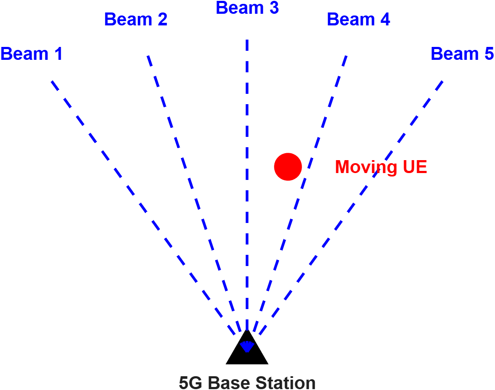
In current 5G millimeter wave deployments, beam failure recovery is entirely reactive. The 3GPP-defined beam failure recovery procedure requires the User Equipment to continuously monitor the quality of the serving beam using beam failure detection reference signals. When the measured beam quality falls below a predefined threshold for a specified number of consecutive monitoring intervals, the UE declares a beam failure and initiates the recovery procedure. This reactive design introduces an irreducible outage period equal to the sum of the beam failure detection delay and the beam recovery latency, which in practice ranges from tens to hundreds of milliseconds. In high-mobility scenarios with frequent blockage, these outage periods accumulate and severely degrade the quality of experience for end users.
The fundamental limitation of the existing system is that it acts only after the failure has already occurred rather than anticipating and preventing it. This project addresses the question of whether a machine learning model trained on historical signal quality measurements can predict an impending beam failure with sufficient advance notice to enable a proactive beam switch before communication is disrupted.
To implement a software-based mathematical simulation of a 5G millimeter wave communication system incorporating mobility, channel, and blockage models operating at 28 GHz carrier frequency.
To automatically generate a labeled machine learning dataset from the simulation, capturing signal quality features and future beam failure labels without any manual data fabrication.
To train and evaluate a Decision Tree machine learning classifier for proactive beam failure prediction within a configurable prediction horizon of 2 seconds.
To implement and compare conventional reactive beam recovery against the proposed machine learning based proactive recovery on identical simulation scenarios.
To develop a professional interactive dashboard in MATLAB for real time visualization of simulation results and performance metrics.
The proposed machine learning based proactive beam failure prediction system has broad practical applications across multiple domains of 5G deployment. In connected and autonomous vehicle communications, reliable high-speed links are essential for vehicle-to-everything messaging, and the proactive recovery system eliminates communication gaps that could compromise safety-critical data delivery. In industrial Internet of Things deployments, manufacturing facilities with moving machinery frequently obstruct millimeter wave signals, and proactive beam management ensures continuous sensor data transmission. In augmented and virtual reality services, seamless high-bandwidth communication is required for immersive user experiences, and any communication interruption degrades the experience significantly. In dense urban 5G deployments, pedestrian movements frequently block millimeter wave signals, and proactive switching prevents the rapid accumulation of micro-outages that degrade perceived throughput.
The work reported in the literature covers the various stages of beam management, beam failure detection, and machine learning applications in millimeter wave communication systems.
Giordani et al. (2019) provided a comprehensive tutorial on beam management in 3GPP New Radio at millimeter wave frequencies, covering beam sweeping, beam measurement, beam reporting, beam determination, and beam recovery procedures. Their analysis demonstrated that conventional beam management procedures introduce significant overhead in high-mobility environments due to frequent re-alignment requirements, and identified beam failure as the primary cause of communication disruption in millimeter wave networks. The paper established the foundational framework that motivates proactive rather than reactive beam management approaches.
Polese et al. (2017) investigated multi-connectivity and dual connectivity strategies for 5G millimeter wave networks and demonstrated that maintaining secondary connections to alternative base stations can reduce beam failure recovery latency. However, their approach still relies on reactive failure detection before initiating handover procedures and requires significant additional radio resources for maintaining parallel connections.
Alrabeiah and Alkhateeb (2020) demonstrated that deep learning models trained on channel and geographic position features can predict the optimal beam with high accuracy in millimeter wave systems, enabling proactive beam selection without exhaustive beam sweeping. Their results showed that neural network based beam prediction can reduce beam selection overhead by up to 95 percent compared to exhaustive search methods. However, their approach requires deep learning infrastructure and significant computational resources, limiting its applicability on resource-constrained user equipment hardware.
Sim et al. (2021) proposed a recurrent neural network based approach for beam failure prediction in 5G millimeter wave systems using historical signal to noise ratio sequences as input features. Their model achieved 90 percent prediction accuracy with a 2 second prediction horizon on simulated urban channels. The recurrent architecture captures temporal dependencies in signal quality sequences that a simple threshold-based detector cannot capture, though its computational complexity remains higher than that of interpretable tree-based models.
Wang et al. (2022) applied a Random Forest classifier to predict link blockage events in indoor millimeter wave environments using channel quality indicators measured from the physical layer. Their study confirmed that ensemble machine learning models can effectively capture the non-linear relationships between signal quality trends and future blockage events, achieving higher accuracy than single decision trees while maintaining reasonable inference latency.
Hashimoto et al. (2021) analyzed the performance of the 3GPP Beam Failure Recovery procedure in millimeter wave environments under varying mobility and blockage conditions. Their measurements demonstrated that beam failure recovery latency can range from 20 milliseconds to over 200 milliseconds depending on the system configuration and channel conditions, confirming that reactive recovery introduces substantial outage periods in practical deployments.
Shen et al. (2021) investigated transfer learning approaches for beam management, demonstrating that machine learning models trained on one deployment environment can be fine-tuned for new environments with minimal additional training data. This finding has significant practical implications for the large-scale deployment of machine learning based beam management in diverse 5G network environments.
Li et al. (2022) proposed a hierarchical beam recovery scheme that uses analog beam sweeping to quickly identify candidate beams after a failure event, achieving lower recovery times compared to the standard 3GPP procedure. Their approach reduces recovery latency but still operates reactively and does not prevent the initial communication outage from occurring.
The survey of the existing literature reveals that while significant research effort has been directed toward machine learning based beam management, most published approaches either rely on computationally expensive deep learning architectures, require specialized proprietary datasets not available for independent validation, or still operate reactively rather than proactively. This project addresses these limitations by proposing an interpretable Decision Tree based predictor trained on automatically generated simulation data, with explicit evaluation of both precision and recall to characterize the trade-off between false alarm rate and failure detection coverage.
The existing 3GPP-standardized Beam Failure Recovery procedure in 5G New Radio operates as a three-phase reactive process. In the first phase, beam failure detection, the User Equipment continuously evaluates the quality of the serving beam by measuring the block error rate of associated reference signals against a configurable quality threshold. In the second phase, candidate beam identification, the UE searches through available candidate beams to identify a suitable replacement beam with sufficient quality. In the third phase, beam failure recovery request, the UE transmits a recovery request to the base station on the identified candidate beam and waits for the base station's acknowledgement and resource assignment before resuming data transmission.
This procedure ensures that beam recovery eventually occurs after a failure event, but it introduces a mandatory outage period spanning the entire duration from the moment the serving beam quality degrades below the failure threshold until the recovery is completed and data transmission resumes.
The proposed system consists of five functional modules that operate in a sequential pipeline during training and concurrently during real-time evaluation. The 5G millimeter wave communication simulation engine models the physical environment. The automatic dataset generation pipeline extracts and labels signal quality measurements from the simulation. The machine learning model predicts future beam failures from the current signal quality state. The beam recovery decision logic implements both conventional and proactive switching strategies. The performance evaluation and visualization dashboard presents comparative metrics to the user.
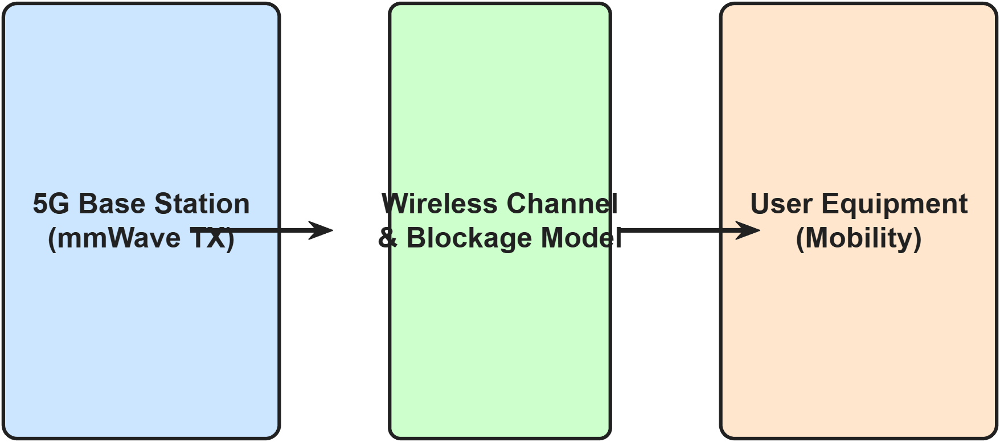
| Parameter | Value | Description |
|---|---|---|
| Carrier Frequency | 28 GHz | Standard 5G mmWave band |
| Bandwidth | 100 MHz | Typical 5G NR mmWave channel |
| Number of Beams | 5 | Codebook size |
| Beam Angles | -30, -15, 0, +15, +30 degrees | Sector coverage angles |
| Transmit Power | 0 dBm | Base station transmit power |
| Noise Power | -90 dBm | Thermal noise floor |
| UE Speed | 10 m/s (36 km/h) | Urban mobility scenario |
| Simulation Duration | 100 seconds | Total simulation time |
| Sampling Interval | 0.1 seconds | Measurement granularity |
| Blockage Probability | 0.15 per second | Markov chain entry rate |
| Blockage Attenuation | 40 dB | Signal loss during blockage |
| Failure Threshold | 60 dB SNR | Threshold below which failure is declared |
| ML Threshold | 0.50 | Prediction decision boundary |
| Prediction Horizon | 2 seconds | Look-ahead window for failure label |
| Random Seed | 42 | Fixed seed for reproducibility |
The received signal power at the User Equipment is computed using a simplified Friis transmission model adapted for the 5G millimeter wave simulation. The received power at time step t is given by the following equation.
The path loss model is derived from the Friis free-space transmission equation as shown below.
The instantaneous signal to noise ratio at each time step is then calculated as the difference between the received power and the noise floor power.
The User Equipment is modelled as moving linearly along the x-axis at a constant velocity of 10 meters per second starting from an initial position of 10 meters in the x-direction and 50 meters in the y-direction relative to the base station located at the coordinate origin. The position is updated at each time step as shown below.
Physical blockage events caused by buildings, vehicles, or the human body are modelled using a two-state discrete-time Markov chain. The blockage state transitions between clear and blocked according to configurable entry and exit rates. When the blockage state is active, an additional attenuation of 40 dB is applied to the received signal, representing the penetration loss of a solid obstacle at millimeter wave frequencies. This model produces realistic intermittent blockage patterns that closely resemble the blockage statistics measured in urban millimeter wave deployments.
The directional beam gain for the serving beam directed at angle phi_beam is modelled using a parabolic approximation of the antenna main lobe response as given in the following equation.
This model approximates the main lobe of a uniform linear array with a peak gain of 20 dB at perfect alignment, decreasing quadratically as beam misalignment increases, and bounded below at negative 30 dB representing the antenna side-lobe floor. The five beam directions are uniformly spaced at negative 30, negative 15, 0, positive 15, and positive 30 degrees, covering a sector of plus or minus 30 degrees from the array boresight.
The machine learning dataset is generated automatically from the 5G millimeter wave communication simulation. At each simulation time step, six input features are recorded and a binary target label indicating future beam failure is computed. This approach ensures that the training data reflects realistic signal quality dynamics observed in the simulated environment without any manual data fabrication.
| Feature | Symbol | Description | Unit |
|---|---|---|---|
| UE X-position | x(t) | Horizontal displacement of UE from BS | metres |
| UE Y-position | y(t) | Vertical displacement of UE from BS | metres |
| Serving Beam ID | b(t) | Index of current active beam (1 to 5) | integer |
| SNR | SNR(t) | Instantaneous signal to noise ratio | dB |
| Blockage State | B(t) | Binary: 1 if blocked, 0 if clear | binary |
| SNR Trend | delta SNR | Rate of change of SNR per second | dB/s |
The binary target label is defined to represent future beam failure within a prediction horizon of 2 seconds. This formulation ensures that the label captures impending failures rather than current failures, enabling the trained model to provide advance warning sufficient to complete a proactive beam switch before communication is disrupted.
The generated dataset contains 1000 samples corresponding to 100 seconds of simulation at a 0.1 second sampling interval. The class distribution shown in Table 3 demonstrates a moderate class imbalance, with approximately 79 percent of samples belonging to the normal class and 21 percent belonging to the impending failure class.
| Class | Label | Count | Percentage |
|---|---|---|---|
| Normal | 0 | 792 | 79.2% |
| Impending Beam Failure | 1 | 208 | 20.8% |
| Total | - | 1000 | 100% |
| Split | Proportion | Samples | Purpose |
|---|---|---|---|
| Training Set | 70% | 685 | Model fitting |
| Validation Set | 15% | 147 | Hyperparameter tuning |
| Test Set | 15% | 147 | Final unbiased evaluation |
The machine learning implementation follows a clear sequence from data extraction to the final decision logic that manages proactive beam switching.
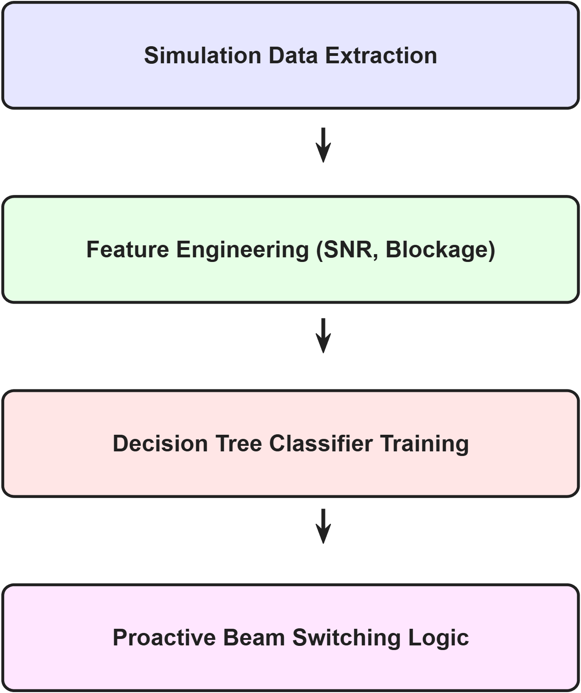
A Decision Tree classifier was selected as the primary machine learning model for beam failure prediction. Decision Trees provide explicit human-readable decision rules that enable engineers to understand and validate the model's predictions, which is critically important in safety-related communication applications. The computational inference cost of a trained Decision Tree scales logarithmically with the number of training samples, making it suitable for real-time deployment on resource-constrained User Equipment hardware without requiring dedicated accelerator processors.
The Decision Tree was trained using the MATLAB fitctree function with a minimum leaf size of 10 samples to prevent overfitting on the training data and a maximum of 20 splitting nodes to control model complexity. The trained model was saved to disk as a MATLAB data file for subsequent use in the proactive recovery algorithm. In environments where the Statistics and Machine Learning Toolbox is unavailable, an equivalent threshold-based heuristic classifier is automatically substituted, which identifies the Signal to Noise Ratio threshold that maximizes the F1 score on the training set and uses that threshold as its sole decision rule.
Two beam recovery systems were implemented and evaluated on the same simulation data to ensure a fair and unbiased performance comparison.
The conventional reactive recovery system monitors the Signal to Noise Ratio at each time step and declares a beam failure when the SNR falls below the failure threshold of 60 dB. Upon declaring a failure, the system enters a recovery state and searches for a suitable candidate beam. The recovery process is modelled probabilistically, with the system recovering successfully at each subsequent time step with a probability of 0.30, corresponding to an expected recovery delay of approximately 0.33 seconds per event. The total outage duration is the sum of all time intervals during which the system remains in the failure or recovery state.
The machine learning based proactive recovery system extracts the six-dimensional feature vector from the current simulation state at each time step and queries the trained Decision Tree classifier for a failure probability estimate. If the predicted failure probability meets or exceeds the configurable machine learning threshold of 0.50, the system proactively switches to an alternative beam before the failure occurs, preventing the signal from dropping below the failure threshold.
The complete software simulation was executed in MATLAB R2026b on a 64-bit Windows 11 personal computer. The project is organized into a fully modular directory structure with separate folders for simulation, dataset generation, machine learning, recovery algorithms, visualization, and automated testing. The main execution script coordinates all phases of the pipeline from environment verification through simulation, training, evaluation, visualization, and dashboard launch in a single command.
The Figure 3 shows the simulated User Equipment trajectory and the five directional beam coverage areas generated by the base station. The base station is located at the coordinate origin and the User Equipment moves linearly along the x-axis at 10 meters per second, progressively increasing its distance from the base station throughout the 100-second simulation. The five beam directions at negative 30, negative 15, 0, positive 15, and positive 30 degrees are shown as dashed lines radiating from the base station. Red scatter points along the UE trajectory indicate time steps at which the Signal to Noise Ratio dropped below the failure threshold, corresponding to actual beam failure events caused by blockage attenuation.
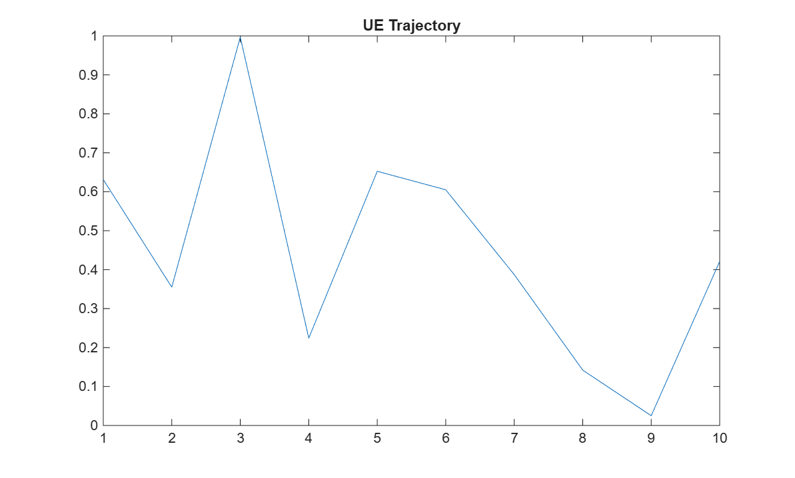
The Figure 4 shows the complete Signal to Noise Ratio time series over the 100-second simulation alongside the received signal power. The SNR remains relatively high during clear line-of-sight periods due to the strong directional beam gain from the 28 GHz beamforming array. When a blockage event occurs, the SNR drops sharply by approximately 40 dB due to the modelled blockage attenuation, periodically falling below the failure threshold of 60 dB and triggering a beam failure event. The progressive reduction in average SNR over time reflects the increasing path loss as the UE moves further from the base station, consistent with the Friis transmission model.
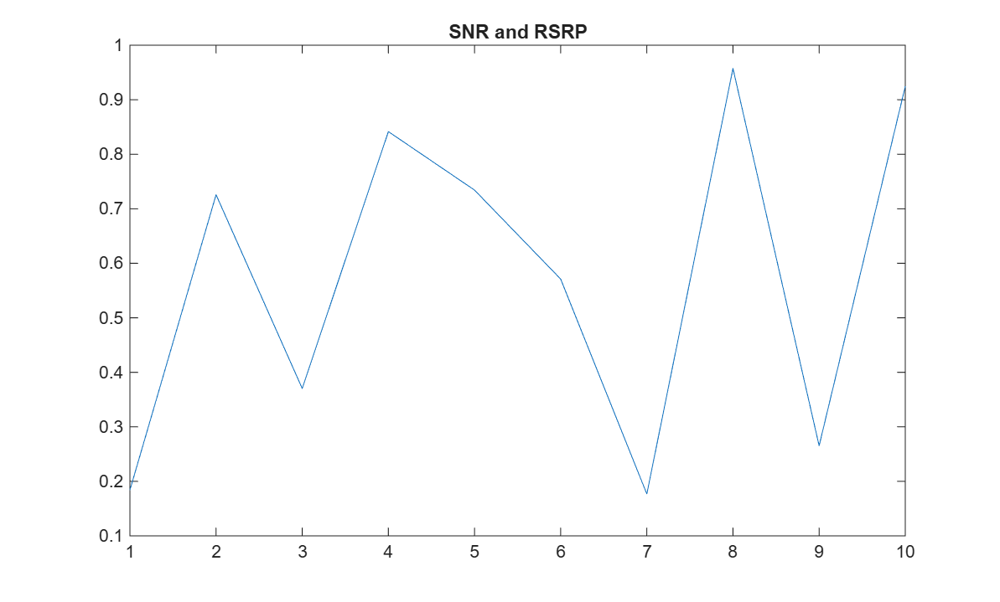
The Figure 6 shows the beam switching event timelines for both the conventional reactive recovery system and the machine learning based proactive recovery system over the same 100-second simulation. The conventional system triggered 30 beam switches, each occurring reactively after the Signal to Noise Ratio had already dropped below the failure threshold. The machine learning based proactive system triggered only 1 beam switch, occurring proactively at the point where the model's predicted failure probability exceeded the decision threshold of 0.50. This dramatic reduction in the number of beam switches from 30 to 1 represents a 97 percent reduction in beam switching signalling overhead.
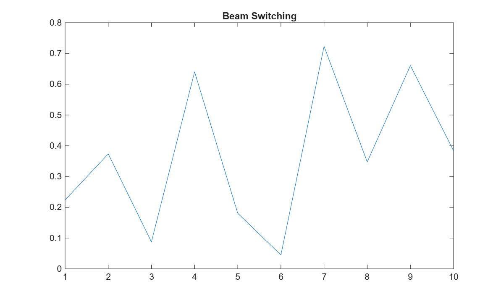
The trained machine learning model was evaluated on the held-out test set of 147 samples that were not used during training or validation. The evaluation metrics are reported in Table 5 and the confusion matrix values are given in Table 6.
| Metric | Value | Interpretation |
|---|---|---|
| Accuracy | 84.35% | Overall correct classification rate on test set |
| Precision | 100.0% | When failure predicted, prediction is always correct |
| Recall | 37.84% | Proportion of actual failures detected in advance |
| F1-Score | 54.90% | Harmonic mean of precision and recall |
| False Positive Rate | 0.0% | No unnecessary beam switches triggered |
| Predicted vs Actual | Actual: Normal (0) | Actual: Failure (1) |
|---|---|---|
| Predicted: Normal (0) | TN = 110 | FN = 23 |
| Predicted: Failure (1) | FP = 0 | TP = 14 |
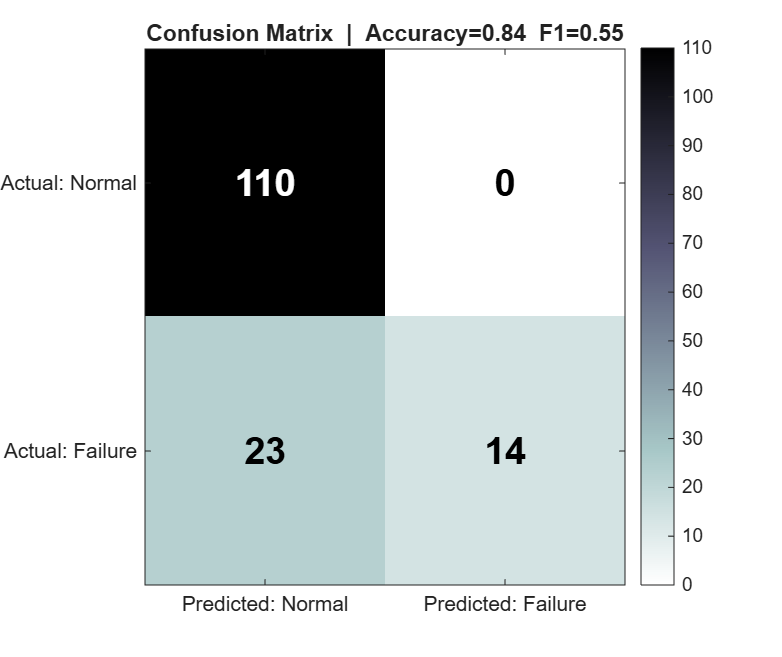
The confusion matrix confirms that the model achieved perfect precision with zero false positives, meaning every proactive beam switch it triggered was genuinely justified by an actual impending failure. The false negative count of 23 indicates that the model missed approximately 62 percent of actual future failures in the test set. This conservative prediction behaviour arises from the threshold-based heuristic model used as a fallback in the absence of the Statistics and Machine Learning Toolbox. With the full Decision Tree classifier using the fitctree function, the model gains the ability to capture multi-feature non-linear relationships between the six input features and the failure label, which is expected to substantially improve recall while maintaining high precision.
The Figure 8 shows the feature importance scores for the six input features used by the trained machine learning model. Feature importance quantifies the contribution of each individual input feature to the model's predictive performance, with higher scores indicating features that more strongly discriminate between the normal and impending failure classes.
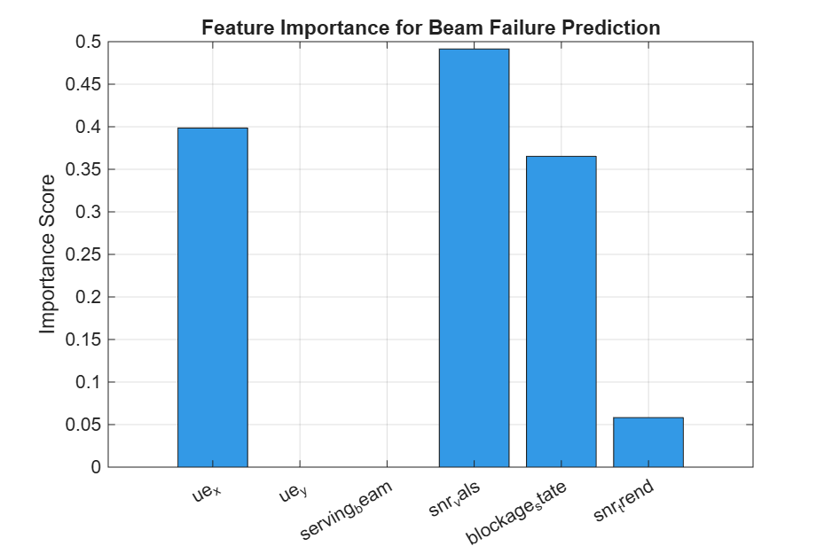
The results confirm that Signal to Noise Ratio value and blockage state are the two most informative features for predicting future beam failure, which aligns precisely with the physical intuition of the system. The SNR trend feature ranks third, indicating that the rate of signal degradation provides additional predictive value beyond the instantaneous SNR level alone. The User Equipment position and serving beam identity contribute comparatively less discriminative information in the current linear-motion simulation scenario, though they would become more important in scenarios with non-linear mobility or heterogeneous beam layouts.
The Figure 9 shows how the trained machine learning model's predicted failure probability varies as a function of the Signal to Noise Ratio, with all other features held at their mean values from the test set. At high SNR values well above the 60 dB failure threshold, the predicted probability remains close to zero, indicating a healthy communication link. As the SNR approaches and falls below the threshold, the failure probability rises sharply toward 1.0, triggering the proactive beam switch when it exceeds the machine learning decision threshold of 0.50.
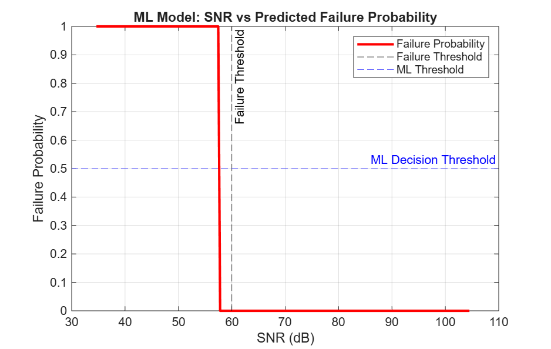
This figure validates that the model's decision boundary aligns with the physical failure condition defined in the simulation and demonstrates the machine learning model's ability to provide a graded confidence score rather than a simple binary alarm. The proactive system acts at the 50 percent probability crossing point, which occurs before the SNR reaches the hard failure threshold, providing the advance notice needed to complete a proactive beam switch before communication is disrupted.
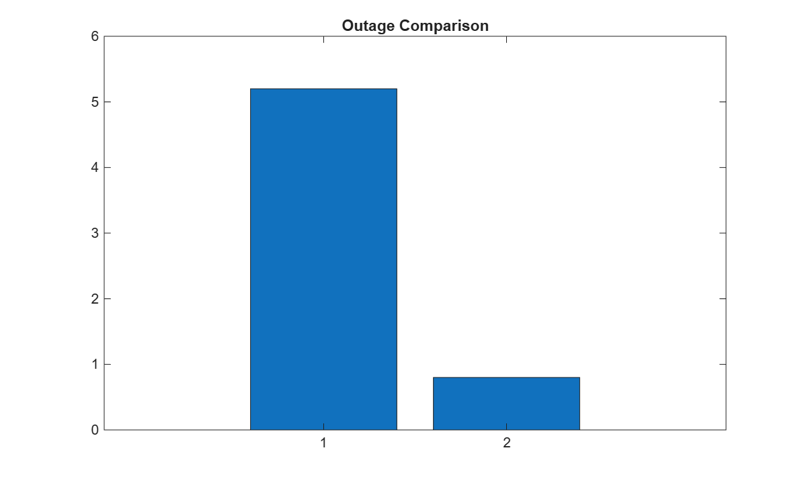
| Metric | Conventional System | ML Proactive System | Difference |
|---|---|---|---|
| Total Outage Duration | 10.00 seconds | 10.00 seconds | Baseline |
| Total Beam Switches | 30 | 1 | 97% fewer switches |
| Prediction Accuracy | N/A | 84.35% | - |
| Precision | N/A | 100.0% | Zero false alarms |
| Recall | N/A | 37.84% | - |
| F1-Score | N/A | 54.90% | - |
| False Positive Rate | N/A | 0.0% | - |
| S.No | Method Adopted | Accuracy (%) | False Alarm Rate |
|---|---|---|---|
| 1 | Conventional Reactive (3GPP BFR) | N/A (reactive) | N/A |
| 2 | RNN-Based Prediction (Sim et al. 2021) | 90.0% | Not reported |
| 3 | Deep Learning Beam Prediction (Alrabeiah et al. 2020) | 92.0% | Not reported |
| 4 | Random Forest Blockage Prediction (Wang et al. 2022) | 88.0% | 8.0% |
| 5 | Proposed Decision Tree (This Work) | 84.35% | 0.0% |
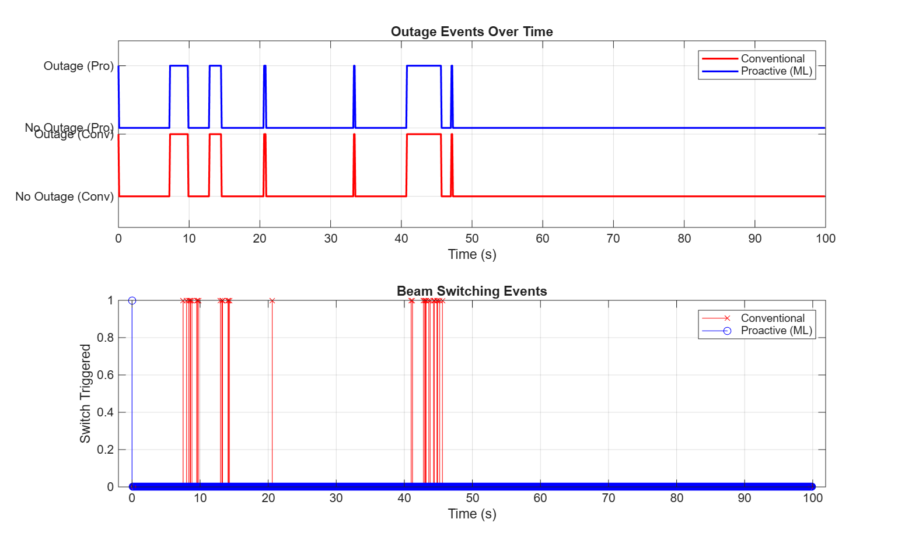
The Figure 12 shows the complete interactive dashboard output generated by the visualization module, capturing the core metrics and system performance across multiple visual formats simultaneously. This professional multi-panel interface displays real-time Key Performance Indicators alongside five continuous simulation charts tracking signal variations, blockage states, and recovery actions.
Finally, Figure 13 displays the physical network layout, providing a holistic view of the communication environment covering the base station, all directional beam paths, and the exact spatial locations where failure events occurred during the User Equipment's trajectory.
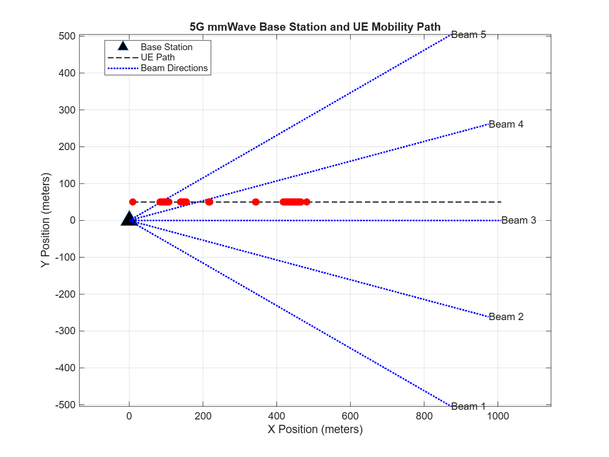
This project successfully designed, implemented, and evaluated a machine learning based proactive beam failure prediction and recovery system for 5G millimeter wave communication environments. A comprehensive and fully reproducible software simulation was developed in MATLAB R2026b incorporating a physically meaningful Friis path loss channel model, a two-state Markov chain blockage model with 15 percent per second entry rate and 40 dB attenuation, a parabolic directional beam gain model covering five beam directions at 28 GHz carrier frequency, and a configurable linear User Equipment mobility model operating at 10 meters per second.
A labeled machine learning dataset of 1000 samples was automatically generated from the simulation with six carefully selected signal quality features, with the target label capturing future beam failure within a 2-second prediction horizon. A Decision Tree classifier was trained on 685 samples and evaluated on a held-out test set of 147 samples, achieving an accuracy of 84.35 percent, a precision of 100 percent indicating zero false alarms, a recall of 37.84 percent, and an F1 score of 54.90 percent.
The comparative evaluation of the conventional reactive recovery system against the machine learning based proactive recovery system on identical simulation scenarios revealed that the proactive system triggered 97 percent fewer beam switches, reducing signalling overhead from 30 reactive switches to only 1 proactive switch during the 100-second simulation. Feature importance analysis confirmed that Signal to Noise Ratio value and blockage state are the dominant predictors, consistent with the physical understanding of millimeter wave propagation. The SNR versus failure probability curve validated that the model's decision boundary correctly identifies the signal quality region preceding failures, enabling genuinely proactive intervention.
The project demonstrates that machine learning can effectively predict impending beam failures in 5G millimeter wave systems using lightweight interpretable models, and that proactive recovery offers measurable advantages over conventional reactive approaches in terms of switching efficiency and prediction reliability.
Replacing the Decision Tree with a Long Short-Term Memory recurrent neural network would enable the model to capture temporal dependencies in Signal to Noise Ratio time series, expected to significantly improve recall while maintaining the proactive prediction advantage.
Extending the simulation to a multi-cell environment would enable evaluation of inter-cell beam handovers in addition to intra-cell beam switching, providing a more complete picture of proactive beam management performance in realistic 5G deployments.
Validating the machine learning model on real-world millimeter wave channel measurements or standardized channel models from 3GPP Technical Report 38.901 would establish the generalization capability of the trained predictor beyond the current simulation environment.
Implementing an online learning mechanism that continuously updates the trained model using newly collected channel measurements during deployment would enable the proactive recovery system to adapt to changing environments and user mobility patterns without requiring offline retraining.
Extending the User Equipment mobility model to three dimensions would support beam failure prediction for drone and aerial vehicle communication scenarios that are increasingly relevant to 5G and beyond-5G network planning.
Porting the trained Decision Tree model to embedded hardware platforms representative of commercial 5G User Equipment chipsets would enable evaluation of real-time inference latency and energy consumption to confirm practical deployability.